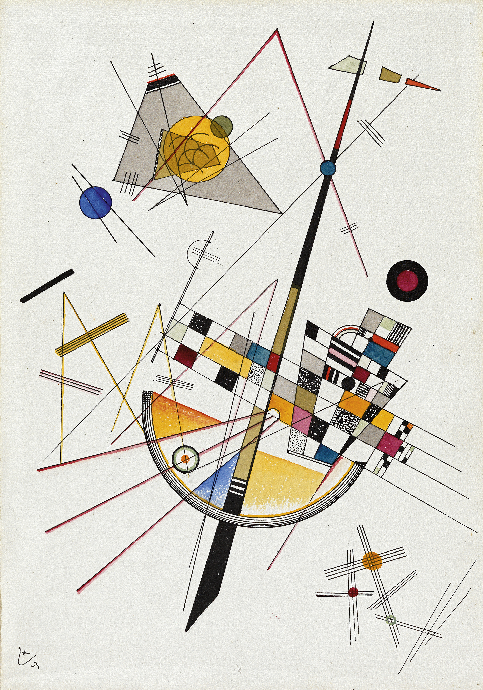
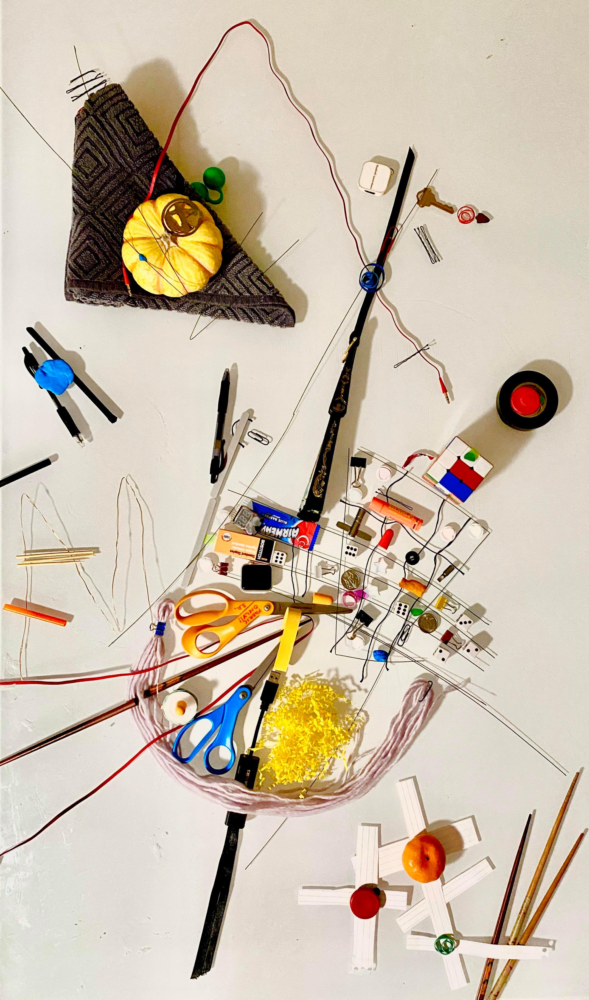

Accidental reproduction of Delicate Tension, No.85
“Being, somehow, Cervantes, and arriving thereby at the Quixote - that looked to Menard less challenging (and therefore less interesting) than continuing to be Pierre Menard and coming to the Quixote through the experiences of Pierre Menard.” - Pierre Menard, Author of the Quixote (Borges)


I found this set of objects, arranged exactly like Kandinsky’s Delicate Tension No. 85, on the floor of my bedroom after I hadn’t cleaned for a few weeks.